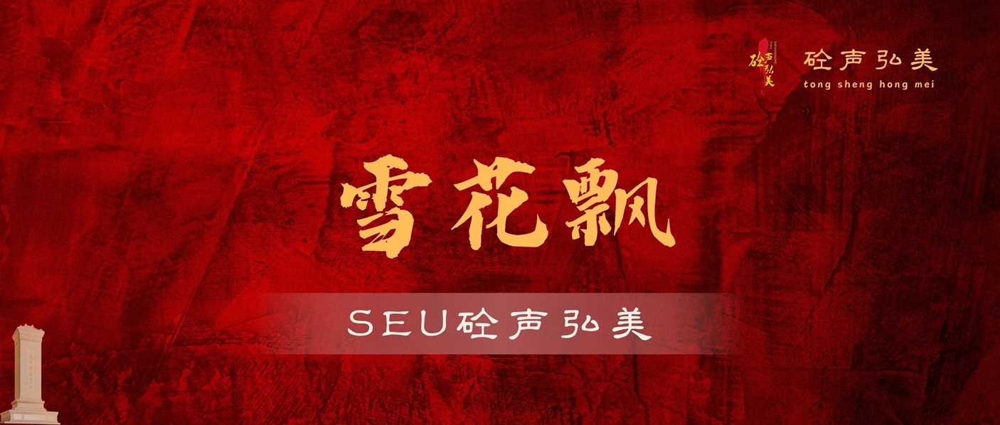
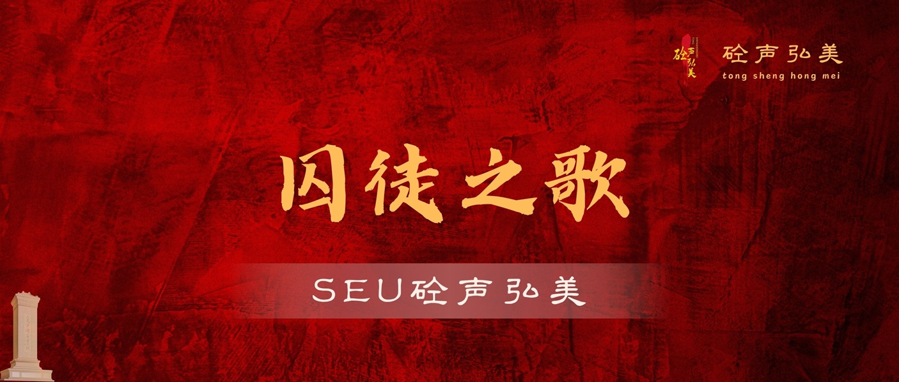
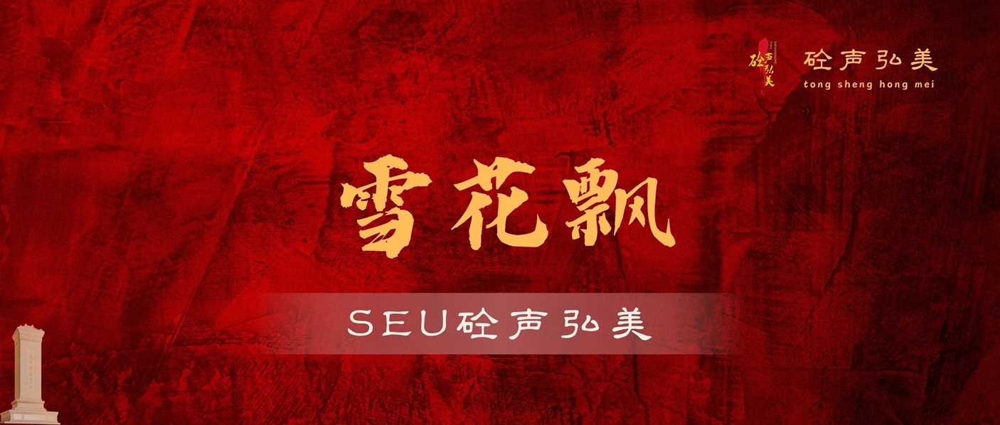
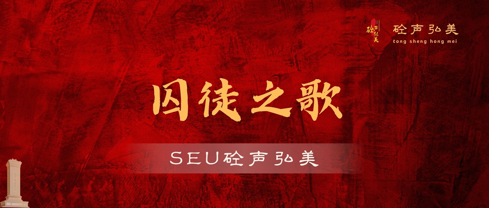

雨花传文创体系
系统设计思路：
整套文创立足于红色美育这一核心主题，根据不同的诗歌词曲内容分为三大系列：信仰之歌系列、先驱之诗系列、英魂之曲系列。在保证红色文化的严肃性的前提下大胆尝试，积极探索新时代下大家喜闻乐见的红色文化传播方式，针对性地设计整体风格、色彩搭配、细节设计等，同时各个系列下均制作有宣传图、海报以及书签，得以充分展示实践内容，多维度传播红色文化。
文创实例：
（1）信仰之歌系列
信仰之歌系列文创依托南京市音乐家协会提供的“信仰之歌”系列歌曲进行设计。信仰指引着奋斗的方向，决定着不同的价值抉择，主体文字选用红色艺术字，在保证红色主题严肃性的同时契合红色美育的主题，另外画面中增加有红日、飞鸟、红色飘带、光束等元素，象征着红色信仰的引领作用、薪火传承以及带给后代的力量。

（2）先驱之诗系列
先驱之诗系列文创根据雨花台烈士陵园管理局整理的《雨花英烈诗词》内容进行设计。
画面背景选取红色浪潮，体现出革命以及抗战时期英烈为了新中国前赴后继、赴汤蹈火的情景，文字部分为诗的名字并精选部分诗句，同时附有对应作品的朗诵二维码，解决了书签展示内容有限的难题。左下角添加英烈雕像，突出强调该系列的核心对象。整体设计简约大方，一目了然，适合不同年龄段使用。


（3）英魂之曲系列
英魂之曲系列文创结合雨花台烈士陵园管理局主办的《雨花台烈士生前原创歌曲展板》进行设计。依旧选取红色作为主体背景色，略显杂乱的条纹增添了历史的厚重感，连同左下角的人民英雄纪念碑，警示我们勿忘历史，向英烈致敬。在内容上充分利用海报的优势，歌曲原文及赏析，便于大家对于歌曲有一个深度的理解与感悟。

 


